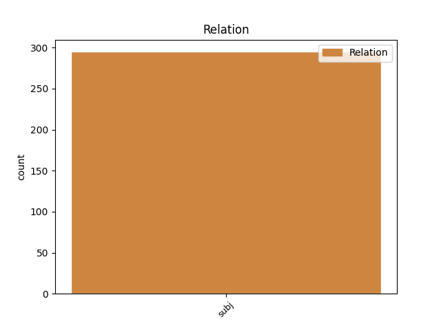
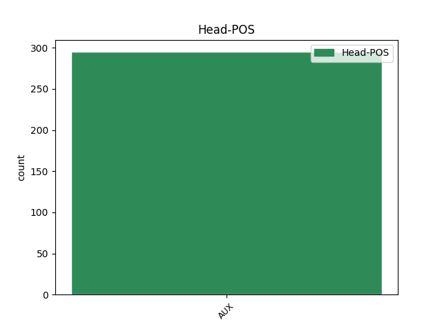
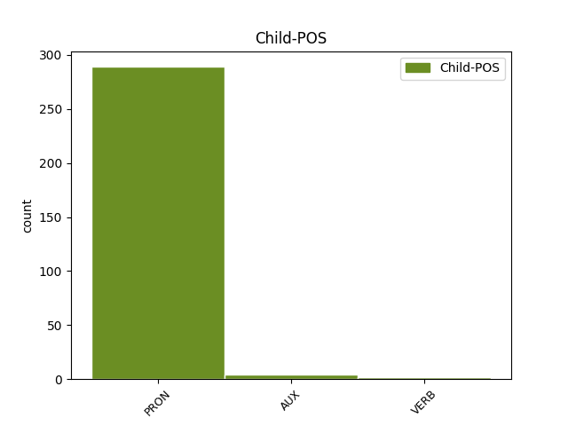

Distribution of features within this leaf



Agreement Rules sorted by frequency.
- When the dependent token is the subject(subj) of the head token, and the head token is AUX and the dependent token is PRON.
1 " _ _ _ _ 0 _ _ _
2 That _ _ _ _ 0 _ _ _
3 King _ _ _ _ 0 _ _ _
4 Shakespeare _ _ _ _ 0 _ _ _
5 " _ _ _ _ 0 _ _ _
6 , _ _ _ _ 0 _ _ _
7 the _ _ _ _ 0 _ _ _
8 essayist _ _ _ _ 0 _ _ _
9 Thomas _ _ _ _ 0 _ _ _
10 Carlyle _ _ _ _ 0 _ _ _
11 wrote _ _ _ _ 0 _ _ _
12 in _ _ _ _ 0 _ _ _
13 1840 _ _ _ _ 0 _ _ _
14 , _ _ _ _ 0 _ _ _
15 " _ _ _ _ 0 _ _ _
16 does do AUX VM Mood=Ind|Number=Sing|Person=3|Tense=Pres|VerbForm=Fin 0 _ _ _
17 not _ _ _ _ 0 _ _ _
18 he he PRON PE Gender=Masc|Number=Sing|Person=3|PronType=Prs 16 subj _ _
19 shine _ _ _ _ 0 _ _ _
20 , _ _ _ _ 0 _ _ _
21 in _ _ _ _ 0 _ _ _
22 crowned _ _ _ _ 0 _ _ _
23 sovereignty _ _ _ _ 0 _ _ _
24 , _ _ _ _ 0 _ _ _
25 over _ _ _ _ 0 _ _ _
26 us _ _ _ _ 0 _ _ _
27 all _ _ _ _ 0 _ _ _
28 , _ _ _ _ 0 _ _ _
29 as _ _ _ _ 0 _ _ _
30 the _ _ _ _ 0 _ _ _
31 noblest _ _ _ _ 0 _ _ _
32 , _ _ _ _ 0 _ _ _
33 gentlest _ _ _ _ 0 _ _ _
34 , _ _ _ _ 0 _ _ _
35 yet _ _ _ _ 0 _ _ _
36 strongest _ _ _ _ 0 _ _ _
37 of _ _ _ _ 0 _ _ _
38 rallying _ _ _ _ 0 _ _ _
39 signs _ _ _ _ 0 _ _ _
40 ; _ _ _ _ 0 _ _ _
1 But _ _ _ _ 0 _ _ _
2 it _ _ _ _ 0 _ _ _
3 is be AUX V Mood=Ind|Number=Sing|Person=3|Tense=Pres|VerbForm=Fin 0 _ _ _
4 less _ _ _ _ 0 _ _ _
5 clear _ _ _ _ 0 _ _ _
6 how _ _ _ _ 0 _ _ _
7 the _ _ _ _ 0 _ _ _
8 government _ _ _ _ 0 _ _ _
9 will will AUX VM Mood=Ind|Person=3|Tense=Pres|VerbForm=Fin 3 subj _ _
10 create _ _ _ _ 0 _ _ _
11 additional _ _ _ _ 0 _ _ _
12 jobs _ _ _ _ 0 _ _ _
13 for _ _ _ _ 0 _ _ _
14 women _ _ _ _ 0 _ _ _
15 . _ _ _ _ 0 _ _ _
1 It _ _ _ _ 0 _ _ _
2 is be AUX V Mood=Ind|Number=Sing|Person=3|Tense=Pres|VerbForm=Fin 0 _ _ _
3 not _ _ _ _ 0 _ _ _
4 clear _ _ _ _ 0 _ _ _
5 for _ _ _ _ 0 _ _ _
6 which _ _ _ _ 0 _ _ _
7 companies _ _ _ _ 0 _ _ _
8 Shakespeare _ _ _ _ 0 _ _ _
9 wrote write VERB V Mood=Ind|Person=3|Tense=Past|VerbForm=Fin 2 subj _ _
10 his _ _ _ _ 0 _ _ _
11 early _ _ _ _ 0 _ _ _
12 plays _ _ _ _ 0 _ _ _
13 . _ _ _ _ 0 _ _ _
Disagree Examples:
1 You you PRON PE Person=2|PronType=Prs 2 subj _ _
2 may may AUX VM Mood=Ind|Person=3|Tense=Pres|VerbForm=Fin 0 _ _ _
3 not _ _ _ _ 0 _ _ _
4 offer _ _ _ _ 0 _ _ _
5 or _ _ _ _ 0 _ _ _
6 impose _ _ _ _ 0 _ _ _
7 any _ _ _ _ 0 _ _ _
8 terms _ _ _ _ 0 _ _ _
9 on _ _ _ _ 0 _ _ _
10 the _ _ _ _ 0 _ _ _
11 Work _ _ _ _ 0 _ _ _
12 that _ _ _ _ 0 _ _ _
13 alter _ _ _ _ 0 _ _ _
14 or _ _ _ _ 0 _ _ _
15 restrict _ _ _ _ 0 _ _ _
16 the _ _ _ _ 0 _ _ _
17 terms _ _ _ _ 0 _ _ _
18 of _ _ _ _ 0 _ _ _
19 this _ _ _ _ 0 _ _ _
20 License _ _ _ _ 0 _ _ _
21 or _ _ _ _ 0 _ _ _
22 the _ _ _ _ 0 _ _ _
23 recipients _ _ _ _ 0 _ _ _
24 ' _ _ _ _ 0 _ _ _
25 exercise _ _ _ _ 0 _ _ _
26 of _ _ _ _ 0 _ _ _
27 the _ _ _ _ 0 _ _ _
28 rights _ _ _ _ 0 _ _ _
29 granted _ _ _ _ 0 _ _ _
30 . _ _ _ _ 0 _ _ _
1 You you PRON PE Person=2|PronType=Prs 2 subj _ _
2 may may AUX VM Mood=Ind|Person=3|Tense=Pres|VerbForm=Fin 0 _ _ _
3 not _ _ _ _ 0 _ _ _
4 sublicense _ _ _ _ 0 _ _ _
5 the _ _ _ _ 0 _ _ _
6 Work _ _ _ _ 0 _ _ _
7 . _ _ _ _ 0 _ _ _
1 You you PRON PE Person=2|PronType=Prs 2 subj _ _
2 must must AUX VM Mood=Ind|Person=3|Tense=Pres|VerbForm=Fin 0 _ _ _
3 keep _ _ _ _ 0 _ _ _
4 intact _ _ _ _ 0 _ _ _
5 all _ _ _ _ 0 _ _ _
6 notices _ _ _ _ 0 _ _ _
7 that _ _ _ _ 0 _ _ _
8 refer _ _ _ _ 0 _ _ _
9 to _ _ _ _ 0 _ _ _
10 this _ _ _ _ 0 _ _ _
11 License _ _ _ _ 0 _ _ _
12 and _ _ _ _ 0 _ _ _
13 to _ _ _ _ 0 _ _ _
14 the _ _ _ _ 0 _ _ _
15 disclaimer _ _ _ _ 0 _ _ _
16 of _ _ _ _ 0 _ _ _
17 warranties _ _ _ _ 0 _ _ _
18 . _ _ _ _ 0 _ _ _
1 You you PRON PE Person=2|PronType=Prs 2 subj _ _
2 may may AUX VM Mood=Ind|Person=3|Tense=Pres|VerbForm=Fin 0 _ _ _
3 not _ _ _ _ 0 _ _ _
4 distribute _ _ _ _ 0 _ _ _
5 , _ _ _ _ 0 _ _ _
6 publicly _ _ _ _ 0 _ _ _
7 display _ _ _ _ 0 _ _ _
8 , _ _ _ _ 0 _ _ _
9 publicly _ _ _ _ 0 _ _ _
10 perform _ _ _ _ 0 _ _ _
11 , _ _ _ _ 0 _ _ _
12 or _ _ _ _ 0 _ _ _
13 publicly _ _ _ _ 0 _ _ _
14 digitally _ _ _ _ 0 _ _ _
15 perform _ _ _ _ 0 _ _ _
16 the _ _ _ _ 0 _ _ _
17 Work _ _ _ _ 0 _ _ _
18 with _ _ _ _ 0 _ _ _
19 any _ _ _ _ 0 _ _ _
20 technological _ _ _ _ 0 _ _ _
21 measures _ _ _ _ 0 _ _ _
22 that _ _ _ _ 0 _ _ _
23 control _ _ _ _ 0 _ _ _
24 access _ _ _ _ 0 _ _ _
25 or _ _ _ _ 0 _ _ _
26 use _ _ _ _ 0 _ _ _
27 of _ _ _ _ 0 _ _ _
28 the _ _ _ _ 0 _ _ _
29 Work _ _ _ _ 0 _ _ _
30 in _ _ _ _ 0 _ _ _
31 a _ _ _ _ 0 _ _ _
32 manner _ _ _ _ 0 _ _ _
33 inconsistent _ _ _ _ 0 _ _ _
34 with _ _ _ _ 0 _ _ _
35 the _ _ _ _ 0 _ _ _
36 terms _ _ _ _ 0 _ _ _
37 of _ _ _ _ 0 _ _ _
38 this _ _ _ _ 0 _ _ _
39 License _ _ _ _ 0 _ _ _
40 Agreement _ _ _ _ 0 _ _ _
41 . _ _ _ _ 0 _ _ _
1 If _ _ _ _ 0 _ _ _
2 You _ _ _ _ 0 _ _ _
3 create _ _ _ _ 0 _ _ _
4 a _ _ _ _ 0 _ _ _
5 Collective _ _ _ _ 0 _ _ _
6 Work _ _ _ _ 0 _ _ _
7 , _ _ _ _ 0 _ _ _
8 upon _ _ _ _ 0 _ _ _
9 notice _ _ _ _ 0 _ _ _
10 from _ _ _ _ 0 _ _ _
11 any _ _ _ _ 0 _ _ _
12 Licensor _ _ _ _ 0 _ _ _
13 You you PRON PE Person=2|PronType=Prs 14 subj _ _
14 must must AUX VM Mood=Ind|Person=3|Tense=Pres|VerbForm=Fin 0 _ _ _
15 , _ _ _ _ 0 _ _ _
16 to _ _ _ _ 0 _ _ _
17 the _ _ _ _ 0 _ _ _
18 extent _ _ _ _ 0 _ _ _
19 practicable _ _ _ _ 0 _ _ _
20 , _ _ _ _ 0 _ _ _
21 remove _ _ _ _ 0 _ _ _
22 from _ _ _ _ 0 _ _ _
23 the _ _ _ _ 0 _ _ _
24 Collective _ _ _ _ 0 _ _ _
25 Work _ _ _ _ 0 _ _ _
26 any _ _ _ _ 0 _ _ _
27 reference _ _ _ _ 0 _ _ _
28 to _ _ _ _ 0 _ _ _
29 such _ _ _ _ 0 _ _ _
30 Licensor _ _ _ _ 0 _ _ _
31 or _ _ _ _ 0 _ _ _
32 the _ _ _ _ 0 _ _ _
33 Original _ _ _ _ 0 _ _ _
34 Author _ _ _ _ 0 _ _ _
35 , _ _ _ _ 0 _ _ _
36 as _ _ _ _ 0 _ _ _
37 requested _ _ _ _ 0 _ _ _
38 . _ _ _ _ 0 _ _ _